원본 시험 · 60문항 · 문제+정답+해설+정답률 (해설 정본 기반) · 문항은 시험지 원문 그대로(뽑아 쓴 글은 아래 접힌 자리에)
1화학의 기초원자의구성입자정답률 96%
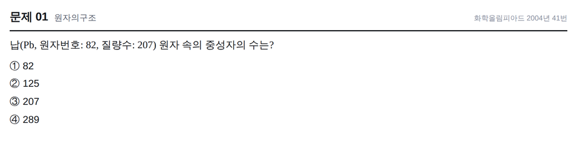
원문 이미지를 불러오지 못했습니다. 시험지 1번을 확인해 주세요.
정답 ②
글로 옮긴 것 보기 (원문이 아닙니다)
아래는 HWP·PDF 에서 글자만 뽑은 것이라 그림·표·수식이 빠져 있을 수 있습니다. 문제는 위 원문을 보세요.
납(Pb, 원자번호: 82, 질량수: 207) 원자 속의 중성자의 수는?
①82
②125정답
③207
④289
풀이 해설 보기
양성자수가 82, 질량수가 207이므로 중성자수는 125이다.
보기별 오개념(성적표용)
중성자수=질량수−양성자수(원자번호) — 질량수를 그대로 중성자수로 보는 오류
2화학의 기초중성자수정답률 93%
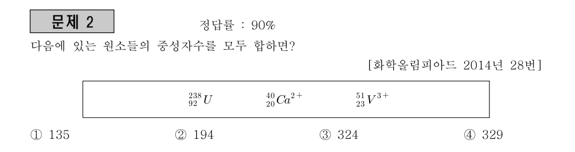
원문 이미지를 불러오지 못했습니다. 시험지 2번을 확인해 주세요.
정답 ②
글로 옮긴 것 보기 (원문이 아닙니다)
아래는 HWP·PDF 에서 글자만 뽑은 것이라 그림·표·수식이 빠져 있을 수 있습니다. 문제는 위 원문을 보세요.
다음에 있는 원소들의 중성자수를 모두 합하면?
①135
②194정답
③324
④329
풀이 해설 보기
중성자수는 각각 238-92=146, 40-20=20, 51-23=28개이다.
전체 중성자수는 146+20+28=194이다.
보기별 오개념(성적표용)
동위원소 표기 ᴬZX에서 중성자=A−Z, 이온 전하는 중성자수와 무관
3화학의 기초화학변화와핵변화정답률 51%
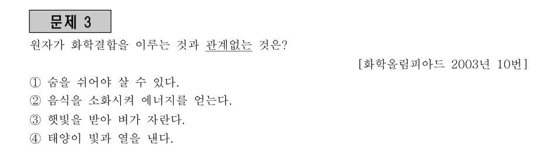
원문 이미지를 불러오지 못했습니다. 시험지 3번을 확인해 주세요.
정답 ④
글로 옮긴 것 보기 (원문이 아닙니다)
아래는 HWP·PDF 에서 글자만 뽑은 것이라 그림·표·수식이 빠져 있을 수 있습니다. 문제는 위 원문을 보세요.
원자가 화학결합을 이루는 것과 관계없는 것은?
①숨을 쉬어야 살 수 있다.
②음식을 소화시켜 에너지를 얻는다.
③햇빛을 받아 벼가 자란다.
④태양이 빛과 열을 낸다.정답
풀이 해설 보기
① 숨을 쉬어야 살 수 있다.
⇒ 연소 반응,
② 음식을 소화시켜 에너지를 얻는다.
⇒ 연소 반응,
③ 햇빛을 받아 벼가 자란다.
⇒ 광합성,
④ 태양이 빛과 열을 낸다.
⇒ 핵반응,
보기별 오개념(성적표용)
화학결합은 전자 재배열 — 핵융합/핵반응(태양의 빛·열)은 화학결합과 무관
4화학의 기초물질의분류정답률 74%
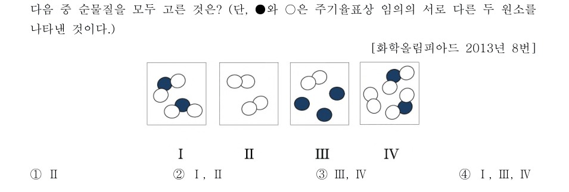
원문 이미지를 불러오지 못했습니다. 시험지 4번을 확인해 주세요.
정답 ②
글로 옮긴 것 보기 (원문이 아닙니다)
아래는 HWP·PDF 에서 글자만 뽑은 것이라 그림·표·수식이 빠져 있을 수 있습니다. 문제는 위 원문을 보세요.
다음 중 순물질을 모두 고른 것은? (단, ●와 ○은 주기율표상 임의의 서로 다른 두 원소를 나타낸 것이다.)
①Ⅱ
②Ⅰ, Ⅱ정답
③Ⅲ, Ⅳ
④Ⅰ, Ⅲ, Ⅳ
풀이 해설 보기
I은 물과 같은 화합물이면서 순물질이다.
II는 수소와 같은 홑원소물질이면서 순물질이다.
III은 수소(2원자분자), 헬륨(1원자분자)과 같은 물질이 섞여있는 혼합물이다.
IV는 수소와 물과 같은 물질이 섞여있는 혼합물이다.
보기별 오개념(성적표용)
순물질은 한 종류 입자(원소·화합물), 두 원소가 일정비로 결합하면 화합물 — 단순 섞임은 혼합물
5화학식량동위원소정답률 92%
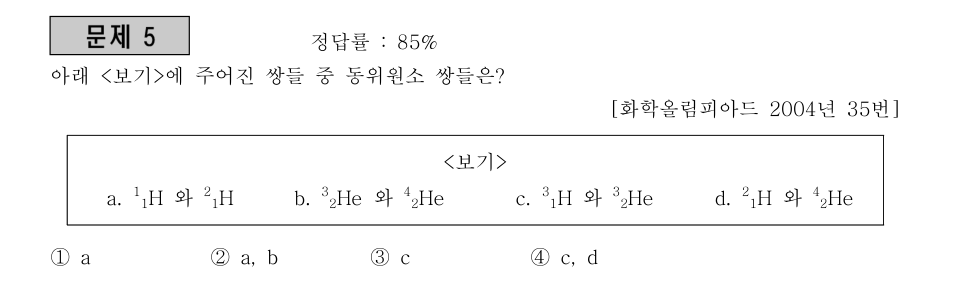
원문 이미지를 불러오지 못했습니다. 시험지 5번을 확인해 주세요.
정답 ②
글로 옮긴 것 보기 (원문이 아닙니다)
아래는 HWP·PDF 에서 글자만 뽑은 것이라 그림·표·수식이 빠져 있을 수 있습니다. 문제는 위 원문을 보세요.
아래 에 주어진 쌍들 중 동위원소 쌍들은?
①a
②a, b정답
③c
④c, d
풀이 해설 보기
동위원소는 양성자수(원자번호)는 동일하지만 중성자수가 달라 질량수가 다른 원소이다. 따라서 a.와 b.와 는 동위원소이다.
보기별 오개념(성적표용)
동위원소=양성자수 같고 중성자수 다른 원자 — 전하/원자수 다른 것과 혼동 주의
6몰몰과양적관계정답률 62%
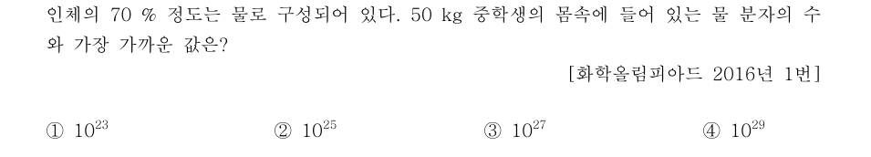
원문 이미지를 불러오지 못했습니다. 시험지 6번을 확인해 주세요.
정답 ③
글로 옮긴 것 보기 (원문이 아닙니다)
아래는 HWP·PDF 에서 글자만 뽑은 것이라 그림·표·수식이 빠져 있을 수 있습니다. 문제는 위 원문을 보세요.
인체의 70 % 정도는 물로 구성되어 있다. 50 kg 중학생의 몸속에 들어 있는 물 분자의 수와 가장 가까운 값은?
①10²³
②10²⁵
③10²⁷정답
④10²⁹
풀이 해설 보기
몸무게가 50kg이고 70%가 물이므로 물의 질량은 35kg이다. 물은 몰질량은 18g/mol이다. 35000g의 물은 이고, 1몰은 6.02×10²³개이다.
물 분자수는 이다.
보기별 오개념(성적표용)
질량→몰→분자수(×Nₐ) 단계 — 물 분자수와 원자수를 혼동 주의
7몰몰정답률 66%
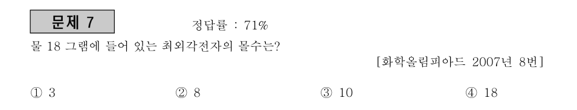
원문 이미지를 불러오지 못했습니다. 시험지 7번을 확인해 주세요.
정답 ②
글로 옮긴 것 보기 (원문이 아닙니다)
아래는 HWP·PDF 에서 글자만 뽑은 것이라 그림·표·수식이 빠져 있을 수 있습니다. 문제는 위 원문을 보세요.
물 18 그램에 들어 있는 최외각전자의 몰수는?
①3
②8정답
③10
④18
풀이 해설 보기
물 분자는 H₂O이다. H는 1개의 최외각전자를 가지고, O는 6개의 최외각전자를 가진다. 물 분자 1개에는 8개의 최외각전자가 있다. 물의 분자량이 18이고, 물 18g에 들어있는 물 분자의 몰수는 1몰이다. 물 1몰에 들어있는 최외각전자의 몰수는 8몰이다.
보기별 오개념(성적표용)
H₂O 1몰의 최외각전자: O(6)+H(1)×2=8몰 — 전자 총수와 최외각만 구분
8몰아보가드로수정답률 59%
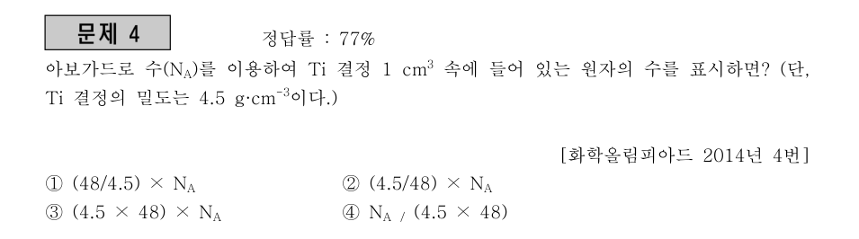
원문 이미지를 불러오지 못했습니다. 시험지 8번을 확인해 주세요.
정답 ②
글로 옮긴 것 보기 (원문이 아닙니다)
아래는 HWP·PDF 에서 글자만 뽑은 것이라 그림·표·수식이 빠져 있을 수 있습니다. 문제는 위 원문을 보세요.
아보가드로 수(NA)를 이용하여 Ti 결정 1 cm³ 속에 들어 있는 원자의 수를 표시하면? (단, Ti 결정의 밀도는 4.5 g·cm⁻³이다.)
①(48/4.5) × NA
②(4.5/48) × NA정답
③(4.5 × 48) × NA
④NA / (4.5 × 48)
풀이 해설 보기
Ti 결정의 밀도는 4.5g/cm³이므로 1cm³의 질량은 4.5g이다. Ti의 원자량은 47.88이다. Ti의 원자량을 48로 간주하면, 4.5g의 Ti에 들어있는 원자의 수는 ② (4.5/48) × NA 이다.
보기별 오개념(성적표용)
원자수=(질량/원자량)×Nₐ=(밀도×부피/원자량)×Nₐ — 밀도/원자량 위치 혼동 주의
9기체PV=nRT정답률 61%
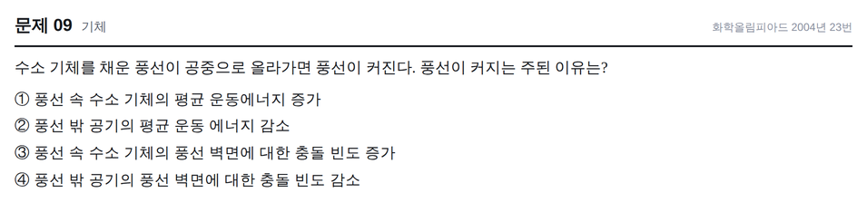
원문 이미지를 불러오지 못했습니다. 시험지 9번을 확인해 주세요.
정답 ④
글로 옮긴 것 보기 (원문이 아닙니다)
아래는 HWP·PDF 에서 글자만 뽑은 것이라 그림·표·수식이 빠져 있을 수 있습니다. 문제는 위 원문을 보세요.
수소 기체를 채운 풍선이 공중으로 올라가면 풍선이 커진다. 풍선이 커지는 주된 이유는?
①풍선 속 수소 기체의 평균 운동에너지 증가
②풍선 밖 공기의 평균 운동 에너지 감소
③풍선 속 수소 기체의 풍선 벽면에 대한 충돌 빈도 증가
④풍선 밖 공기의 풍선 벽면에 대한 충돌 빈도 감소정답
풀이 해설 보기
수소 기체를 채운 풍선이 공중으로 올라가면 외부 압력이 작아진다. 외부압력이 작아질 때 기체 내부의 압력이 외부압력보다 크기 때문에 내부압력과 외부압력이 같아지도록 팽창하게 된다. 즉, 풍선 밖 공기의 풍선 벽면에 대한 충돌 빈도가 감소하기 때문에 풍선이 커진다.
보기별 오개념(성적표용)
고도↑→외부 대기압↓→풍선 벽 외부 충돌↓→팽창 — 내부 운동E 증가로 오해 주의
10기체기체정답률 54%
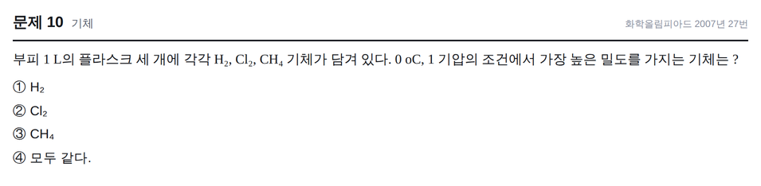
원문 이미지를 불러오지 못했습니다. 시험지 10번을 확인해 주세요.
정답 ②
글로 옮긴 것 보기 (원문이 아닙니다)
아래는 HWP·PDF 에서 글자만 뽑은 것이라 그림·표·수식이 빠져 있을 수 있습니다. 문제는 위 원문을 보세요.
부피 1 L의 플라스크 세 개에 각각 H₂, Cl₂, CH₄ 기체가 담겨 있다. 0 oC, 1 기압의 조건에서 가장 높은 밀도를 가지는 기체는 ?
①H₂
②Cl₂정답
③CH₄
④모두 같다.
풀이 해설 보기
H₂, Cl₂, CH₄ 가 같은 온도, 같은 압력 조건에 있다. 이다. 이고 이다. 분자량비=밀도비 이므로 H₂:Cl₂:CH₄=2:71:16 이다. 따라서 가장 높은 밀도를 가지는 기체는 염소이다.
보기별 오개념(성적표용)
같은 T·P·V면 같은 몰수 — 밀도는 분자량에 비례, 분자량 큰 기체가 밀도 큼
11기체물질의상태정답률 64%
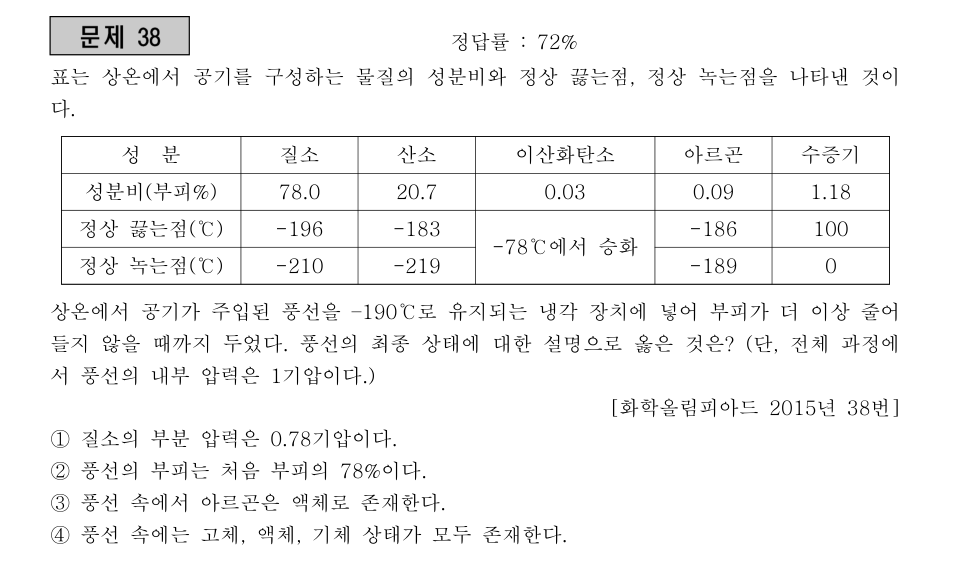
원문 이미지를 불러오지 못했습니다. 시험지 11번을 확인해 주세요.
정답 ④
글로 옮긴 것 보기 (원문이 아닙니다)
아래는 HWP·PDF 에서 글자만 뽑은 것이라 그림·표·수식이 빠져 있을 수 있습니다. 문제는 위 원문을 보세요.
표는 상온에서 공기를 구성하는 물질의 성분비와 정상 끓는점, 정상 녹는점을 나타낸 것이다. 상온에서 공기가 주입된 풍선을 –190°C로 유지되는 냉각 장치에 넣어 부피가 더 이상 줄어들지 않을 때까지 두었다. 풍선의 최종 상태에 대한 설명으로 옳은 것은? (단, 전체 과정에서 풍선의 내부 압력은 1기압이다.)
①질소의 부분 압력은 0.78기압이다.
②풍선의 부피는 처음 부피의 78%이다.
③풍선 속에서 아르곤은 액체로 존재한다.
④풍선 속에는 고체, 액체, 기체 상태가 모두 존재한다.정답
풀이 해설 보기
-190°C에서 질소는 기체, 산소는 액체, 이산화탄소, 아르곤, 수증기는 고체이다.
① 질소의 부분 압력은 0.78기압이다.
⇒ 틀린 설명, 전체 과정에서 풍선 내부의 압력이 1기압이기 때문에 질소의 부분압력은 0.78기압이다.
② 풍선의 부피는 처음 부피의 78%이다.
⇒ 틀린 설명, 기체 상태로 존재하는 것은 질소밖에 없다. 전체 몰수가 0.78배 되었기 때문에 처음부피의 78%라고 생각하겠지만 온도가 298K에서 83K으로 변했기 때문에 나중부피는 처음부피의 배이다.
③ 풍선 속에서 아르곤은 액체로 존재한다.
⇒ 틀린 설명, 아르곤은 고체 상태로 존재한다.
④ 풍선 속에는 고체, 액체, 기체 상태가 모두 존재한다.
⇒ 옳은 설명, 질소는 기체, 산소는 액체, 이산화탄소, 아르곤, 수증기는 고체이다.
보기별 오개념(성적표용)
상온에서 기체로 존재하려면 끓는점이 상온보다 낮아야 — 성분비/상태 판단
12양적관계몰과양적관계정답률 73%
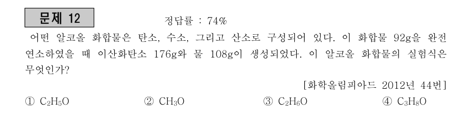
원문 이미지를 불러오지 못했습니다. 시험지 12번을 확인해 주세요.
정답 ③
글로 옮긴 것 보기 (원문이 아닙니다)
아래는 HWP·PDF 에서 글자만 뽑은 것이라 그림·표·수식이 빠져 있을 수 있습니다. 문제는 위 원문을 보세요.
어떤 알코올 화합물은 탄소, 수소, 그리고 산소로 구성되어 있다. 이 화합물 92g을 완전 연소하였을 때 이산화탄소 176g와 물 108g이 생성되었다. 이 알코올 화합물의 실험식은 무엇인가?
①C₂H₅O
②CH₃O
③C₂H₆O정답
④C₃H₈O
풀이 해설 보기
각 원소의 질량은 다음과 같다.
이다.
따라서 실험식은 C₂H₆O이다.
보기별 오개념(성적표용)
연소 생성 CO₂·H₂O로 C·H 몰수, 차이로 O — 실험식 결정 시 O 누락 주의
13양적관계실험식정답률 60%
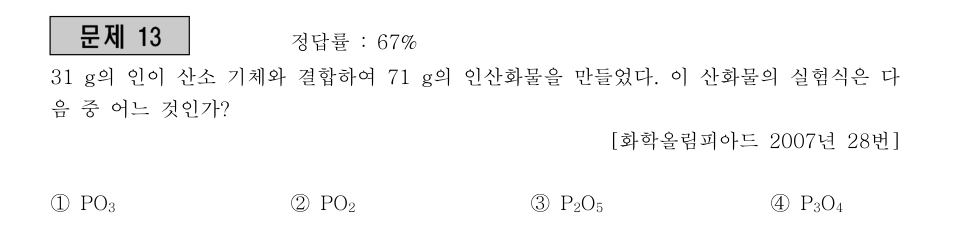
원문 이미지를 불러오지 못했습니다. 시험지 13번을 확인해 주세요.
정답 ③
글로 옮긴 것 보기 (원문이 아닙니다)
아래는 HWP·PDF 에서 글자만 뽑은 것이라 그림·표·수식이 빠져 있을 수 있습니다. 문제는 위 원문을 보세요.
31 g의 인이 산소 기체와 결합하여 71 g의 인산화물을 만들었다. 이 산화물의 실험식은 다음 중 어느 것인가?
①PO₃
②PO₂
③P₂O₅정답
④P₃O₄
풀이 해설 보기
인의 원자량은 31이고, 31g의 인이 산소와 결합하여 71g의 인산화물을 만들었다. 인산화물에서 산소의 질량은 40g이다. 이다. 따라서 산화물의 실험식은 P₂O₅이다.
보기별 오개념(성적표용)
질량비→몰비→가장 간단한 정수비 — 원자량으로 나누는 단계 누락 주의
14양적관계계수맞추기정답률 75%
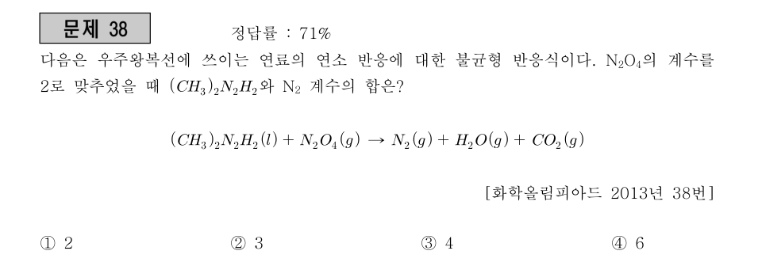
원문 이미지를 불러오지 못했습니다. 시험지 14번을 확인해 주세요.
정답 ③
글로 옮긴 것 보기 (원문이 아닙니다)
아래는 HWP·PDF 에서 글자만 뽑은 것이라 그림·표·수식이 빠져 있을 수 있습니다. 문제는 위 원문을 보세요.
다음은 우주왕복선에 쓰이는 연료의 연소 반응에 대한 불균형 반응식이다. N₂O₄의 계수를 2로 맞추었을 때 와 N₂ 계수의 합은?
아래는 HWP·PDF 에서 글자만 뽑은 것이라 그림·표·수식이 빠져 있을 수 있습니다. 문제는 위 원문을 보세요.
다음은 오존층 파괴물질인 CF₂Cl₂의 처리 반응에 대한 불균형 반응식이다. 계수를 맞췄을 때 (a+d)의 값은?
①3정답
②4
③5
④6
풀이 해설 보기
의 계수를 미정계수법으로 맞추면 다음과 같다.
C: 1+2a=d+e
F: 2=b
Cl: 2=c
Na: 2a=b+c
O: 4a=2e
이고 a=2, b=2, c=2, d=1, e=4이다.
보기별 오개념(성적표용)
미정계수법으로 계수 결정 후 합산 — 균형 검산 누락 주의
16양적관계계수맞추기정답률 88%
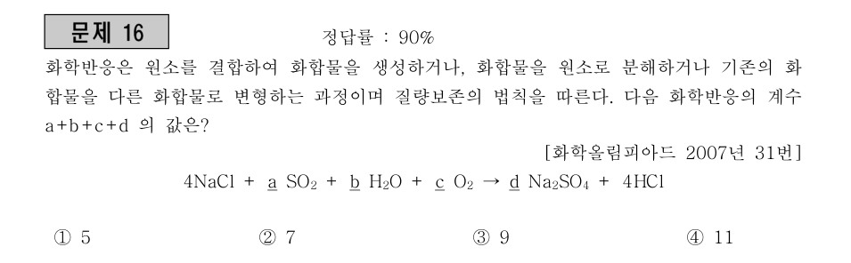
원문 이미지를 불러오지 못했습니다. 시험지 16번을 확인해 주세요.
정답 ②
글로 옮긴 것 보기 (원문이 아닙니다)
아래는 HWP·PDF 에서 글자만 뽑은 것이라 그림·표·수식이 빠져 있을 수 있습니다. 문제는 위 원문을 보세요.
화학반응은 원소를 결합하여 화합물을 생성하거나, 화합물을 원소로 분해하거나 기존의 화합물을 다른 화합물로 변형하는 과정이며 질량보존의 법칙을 따른다. 다음 화학반응의 계수 a+b+c+d 의 값은? 4NaCl + a SO₂ + b H₂O + c O₂ → d Na₂SO₄ + 4HCl
①5
②7정답
③9
④11
풀이 해설 보기
4NaCl + a SO₂ + b H₂O + c O₂ → d Na₂SO₄ + 4HCl
4NaCl + 2SO₂ + 2H₂O + 1O₂ → 2Na₂SO₄ + 4HCl
보기별 오개념(성적표용)
화합·분해·치환 등 — 물리변화(상태변화)와 화학변화 구분
17양적관계몰과양적관계정답률 78%
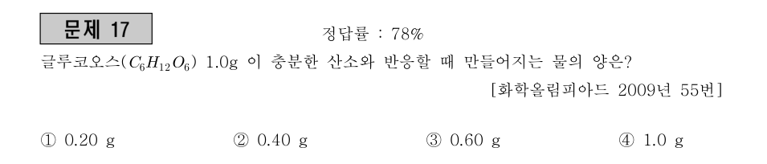
원문 이미지를 불러오지 못했습니다. 시험지 17번을 확인해 주세요.
정답 ③
글로 옮긴 것 보기 (원문이 아닙니다)
아래는 HWP·PDF 에서 글자만 뽑은 것이라 그림·표·수식이 빠져 있을 수 있습니다. 문제는 위 원문을 보세요.
글루코오스() 1.0g 이 충분한 산소와 반응할 때 만들어지는 물의 양은?
①0.20 g
②0.40 g
③0.60 g정답
④1.0 g
풀이 해설 보기
이고 반응질량비=계수비×분자량이다.
반응질량비= 180 : 6×32 : 6×44 : 6×18 = 15:16:22:9 이다.
따라서 1g의 포도당이 충분한 산소와 반응하면 이다.
보기별 오개념(성적표용)
반응식 계수비=몰비, 글루코오스 연소 C₆H₁₂O₆+6O₂→6CO₂+6H₂O로 물 양 계산
18양적관계몰과양적관계정답률 64%
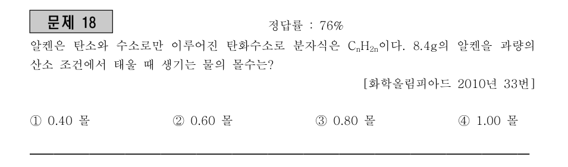
원문 이미지를 불러오지 못했습니다. 시험지 18번을 확인해 주세요.
정답 ②
글로 옮긴 것 보기 (원문이 아닙니다)
아래는 HWP·PDF 에서 글자만 뽑은 것이라 그림·표·수식이 빠져 있을 수 있습니다. 문제는 위 원문을 보세요.
알켄은 탄소와 수소로만 이루어진 탄화수소로 분자식은 CnH₂n이다. 8.4g의 알켄을 과량의 산소 조건에서 태울 때 생기는 물의 몰수는?
①0.40 몰
②0.60 몰정답
③0.80 몰
④1.00 몰
풀이 해설 보기
CnH₂n의 완전연소식은 다음과 같다.
계수비×분자량=반응질량비 이다. 반응질량비=14n:48n:44n:18n=7:24:11:9이다.
탄화수소 8.4g을 완전연소시킬 때 생성되는 물의 질량은 g이다.
물의 몰수는 이다.
보기별 오개념(성적표용)
CnH₂n 연소식 세워 질량→몰→생성물 — 일반식 계수 처리 주의
19기체혼합기체압력정답률 43%
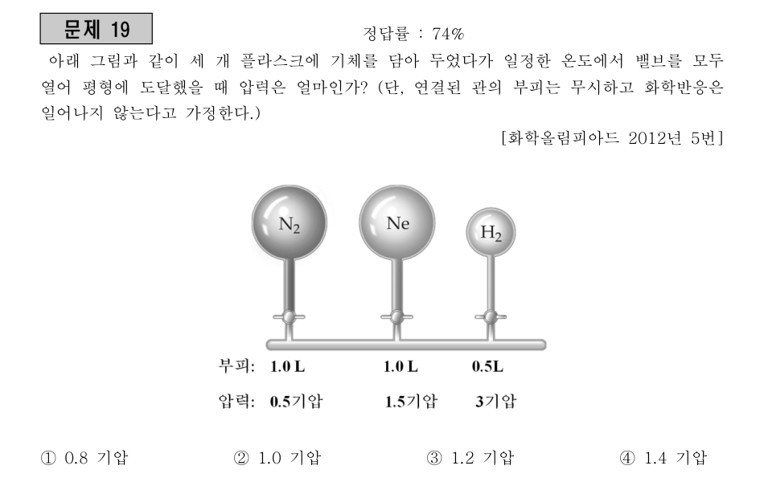
원문 이미지를 불러오지 못했습니다. 시험지 19번을 확인해 주세요.
정답 ④
글로 옮긴 것 보기 (원문이 아닙니다)
아래는 HWP·PDF 에서 글자만 뽑은 것이라 그림·표·수식이 빠져 있을 수 있습니다. 문제는 위 원문을 보세요.
아래 그림과 같이 세 개 플라스크에 기체를 담아 두었다가 일정한 온도에서 밸브를 모두 열어 평형에 도달했을 때 압력은 얼마인가? (단, 연결된 관의 부피는 무시하고 화학반응은 일어나지 않는다고 가정한다.)
①0.8 기압
②1.0 기압
③1.2 기압
④1.4 기압정답
풀이 해설 보기
PV=nRT에서 전체 몰수와 온도가 일정하므로 PV=k이다.
보기별 오개념(성적표용)
밸브 개방 후 전체부피로 재분포, 전체압=Σ분압(돌턴) — 부피 변화 반영 주의
20원소의 기원빅뱅정답률 65%
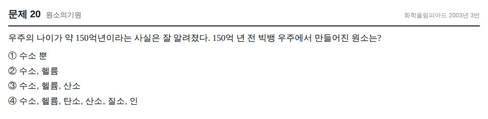
원문 이미지를 불러오지 못했습니다. 시험지 20번을 확인해 주세요.
정답 ②
글로 옮긴 것 보기 (원문이 아닙니다)
아래는 HWP·PDF 에서 글자만 뽑은 것이라 그림·표·수식이 빠져 있을 수 있습니다. 문제는 위 원문을 보세요.
우주의 나이가 약 150억년이라는 사실은 잘 알려졌다. 150억 년 전 빅뱅 우주에서 만들어진 원소는?
①수소 뿐
②수소, 헬륨정답
③수소, 헬륨, 산소
④수소, 헬륨, 탄소, 산소, 질소, 인
풀이 해설 보기
빅뱅을 통해 수소와 헬륨이 탄생했고 별에서의 핵융합을 통해 헬륨~철까지 초신성폭발을 통해 ~우라늄까지 생성가능하다. 우라늄보다 무거운 원소는 인공적으로 합성가능하다.
보기별 오개념(성적표용)
빅뱅 핵합성으로 주로 H·He 생성 — 무거운 원소는 별 내부에서 생성
21원소의 기원우주의원소분포정답률 64%
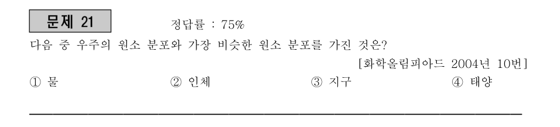
원문 이미지를 불러오지 못했습니다. 시험지 21번을 확인해 주세요.
정답 ④
글로 옮긴 것 보기 (원문이 아닙니다)
아래는 HWP·PDF 에서 글자만 뽑은 것이라 그림·표·수식이 빠져 있을 수 있습니다. 문제는 위 원문을 보세요.
다음 중 우주의 원소 분포와 가장 비슷한 원소 분포를 가진 것은?
①물
②인체
③지구
④태양정답
풀이 해설 보기
우주에는 수소와 헬륨이 가장 많다. 수소가 74%, 헬륨이 24%정도 존재한다. 태양에서는 수소핵융합으로 헬륨을 만들고 있다. 따라서 우주의 원소 분포와 가장 비슷한 원소 분포를 가진 것은 태양이다.
보기별 오개념(성적표용)
우주는 H·He가 대부분 — 지각/지구 조성과 혼동 주의
22원소의 기원빅뱅정답률 57%
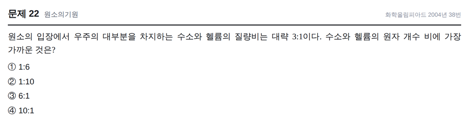
원문 이미지를 불러오지 못했습니다. 시험지 22번을 확인해 주세요.
정답 ④
글로 옮긴 것 보기 (원문이 아닙니다)
아래는 HWP·PDF 에서 글자만 뽑은 것이라 그림·표·수식이 빠져 있을 수 있습니다. 문제는 위 원문을 보세요.
원소의 입장에서 우주의 대부분을 차지하는 수소와 헬륨의 질량비는 대략 3:1이다. 수소와 헬륨의 원자 개수 비에 가장 가까운 것은?
①1:6
②1:10
③6:1
④10:1정답
풀이 해설 보기
이므로 1개당 질량비는 1:4이다. 수소와 헬륨의 질량비가 3:1이므로
이다. 따라서 가장 가까운 값은 ④ 10:1이다.
보기별 오개념(성적표용)
질량비 3:1을 원자수비로 환산 시 원자량(1,4)로 나눔 → 약 12:1
23원소의 기원방사성붕괴정답률 58%
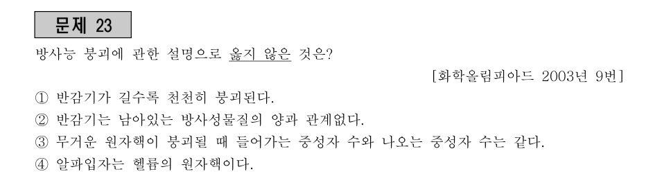
원문 이미지를 불러오지 못했습니다. 시험지 23번을 확인해 주세요.
정답 ③
글로 옮긴 것 보기 (원문이 아닙니다)
아래는 HWP·PDF 에서 글자만 뽑은 것이라 그림·표·수식이 빠져 있을 수 있습니다. 문제는 위 원문을 보세요.
방사능 붕괴에 관한 설명으로 옳지 않은 것은?
①반감기가 길수록 천천히 붕괴된다.
②반감기는 남아있는 방사성물질의 양과 관계없다.
③무거운 원자핵이 붕괴될 때 들어가는 중성자 수와 나오는 중성자 수는 같다.정답
④알파입자는 헬륨의 원자핵이다.
풀이 해설 보기
① 반감기가 길수록 천천히 붕괴된다.
⇒ 옳은 설명, 반감기는 반으로 감소하는데 걸리는 기간이다. 따라서 반감기가 길수록 천천히 붕괴된다.
② 반감기는 남아있는 방사성물질의 양과 관계없다.
⇒ 옳은 설명, 방사성붕괴는 1차반응이고 물질의 양에 관계없이 반감기는 일정하다.
③ 무거운 원자핵이 붕괴될 때 들어가는 중성자 수와 나오는 중성자 수는 같다.
⇒ 틀린 설명, 이므로 들어가는 중성자 수와 나오는 중성자수는 다를 수도 있다.
보기별 오개념(성적표용)
α·β·γ 붕괴의 질량수·원자번호 변화 규칙 — γ는 핵종 불변
24원소의 기원원자량정답률 32%
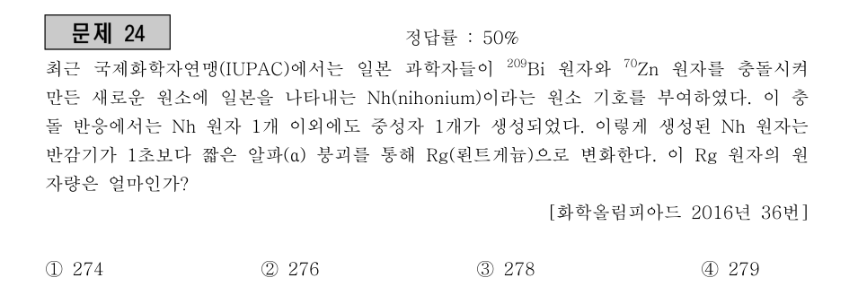
원문 이미지를 불러오지 못했습니다. 시험지 24번을 확인해 주세요.
정답 ①
글로 옮긴 것 보기 (원문이 아닙니다)
아래는 HWP·PDF 에서 글자만 뽑은 것이라 그림·표·수식이 빠져 있을 수 있습니다. 문제는 위 원문을 보세요.
최근 국제화학자연맹(IUPAC)에서는 일본 과학자들이 ²⁰⁹Bi 원자와 ⁷⁰Zn 원자를 충돌시켜 만든 새로운 원소에 일본을 나타내는 Nh(nihonium)이라는 원소 기호를 부여하였다. 이 충돌 반응에서는 Nh 원자 1개 이외에도 중성자 1개가 생성되었다. 이렇게 생성된 Nh 원자는 반감기가 1초보다 짧은 알파(α) 붕괴를 통해 Rg(뢴트게늄)으로 변화한다. 이 Rg 원자의 원자량은 얼마인가?
①274정답
②276
③278
④279
풀이 해설 보기
Nh(니호늄)의 원자번호는 113번이다. Bi(비스무트)의 원자번호는 83번이다. Zn의 원자번호는 30번이다.
비스무트와 아연의 핵융합반응은 다음과 같다.
니호늄은 113번이고 뢴트게늄은 111번이므로 헬륨의 원자핵 1개가 방출되었다고 볼 수 있다. 이에 따른 방사성 붕괴는 다음과 같다.
보기별 오개념(성적표용)
핵융합으로 새 원자번호=Z₁+Z₂ — 합성 원소 식별
25원자모형돌턴의원자설정답률 59%
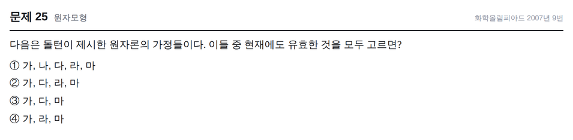
원문 이미지를 불러오지 못했습니다. 시험지 25번을 확인해 주세요.
정답 ④
글로 옮긴 것 보기 (원문이 아닙니다)
아래는 HWP·PDF 에서 글자만 뽑은 것이라 그림·표·수식이 빠져 있을 수 있습니다. 문제는 위 원문을 보세요.
다음은 돌턴이 제시한 원자론의 가정들이다. 이들 중 현재에도 유효한 것을 모두 고르면?
①가, 나, 다, 라, 마
②가, 다, 라, 마
③가, 다, 마
④가, 라, 마정답
풀이 해설 보기
가. 물질은 원자라고 불리는 입자로 구성된다.
⇒ 옳은 설명, 물질은 원자로 구성되어있다.
나. 원자는 파괴되지도 더 이상 쪼개지지도 않는다.
⇒ 틀린 설명, 방사성붕괴를 통해 다른 원소로 변환되기도 한다. 또한 물리적으로 나눌 때 원자는 원자핵과 전자로 구성된다.
다. 한 원소의 원자들은 모두 같다.
⇒ 틀린 설명, 동위원소가 존재하기 때문에 모두 같지는 않다.
라. 서로 다른 원소들은 다른 종류의 원자로 되어 있다.
⇒ 옳은 설명, 서로 다른 원소들은 양성자수가 다르기 때문에 다른 종류의 원자로 되어있다고 볼 수 있다.
마. 서로 다른 원소의 원자들이 결합하여 화합물을 생성할 때 간단한 정수비로 결합한다.
⇒ 옳은 설명, 서로 다른 원소의 원자들이 결합하여 화합물을 생성할 때 원자들의 배열만 바뀌게 된다. 화학반응에서 하나의 원소가 다른 원소로 바뀐다든지 없던 원소가 생성된다든지 있던 원소가 없어지는 일을 일어나지 않는다. 따라서 원자들 사이에 간단한 정수비로 결합하게 된다.
보기별 오개념(성적표용)
현대에 수정된 가정(동위원소 존재로 같은 원소 동일질량 위배 등) 구분
26원자모형가시광선정답률 64%
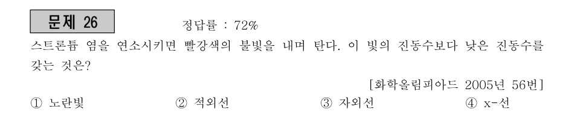
원문 이미지를 불러오지 못했습니다. 시험지 26번을 확인해 주세요.
정답 ②
글로 옮긴 것 보기 (원문이 아닙니다)
아래는 HWP·PDF 에서 글자만 뽑은 것이라 그림·표·수식이 빠져 있을 수 있습니다. 문제는 위 원문을 보세요.
스트론튬 염을 연소시키면 빨강색의 불빛을 내며 탄다. 이 빛의 진동수보다 낮은 진동수를 갖는 것은?
①노란빛
②적외선정답
③자외선
④x-선
풀이 해설 보기
빛의 파장이 짧은 전자기파부터 긴 순서로 나열하면 다음과 같다.
진동수: 선>X선>자외선>가시광선(보>남>파>초>노>주>빨)>적외선>마이크로파>라디오파
따라서 빨간색의 불빛보다 낮은 진동수를 갖는 것은 적외선이다.
보기별 오개념(성적표용)
빛 E=hν, 진동수 낮을수록 E 낮고 파장 김 — 빨강보다 낮은 진동수=적외선
27원자모형보어모형계열정답률 85%
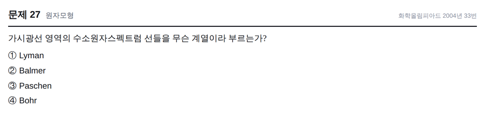
원문 이미지를 불러오지 못했습니다. 시험지 27번을 확인해 주세요.
정답 ②
글로 옮긴 것 보기 (원문이 아닙니다)
아래는 HWP·PDF 에서 글자만 뽑은 것이라 그림·표·수식이 빠져 있을 수 있습니다. 문제는 위 원문을 보세요.
가시광선 영역의 수소원자스펙트럼 선들을 무슨 계열이라 부르는가?
①Lyman
②Balmer정답
③Paschen
④Bohr
풀이 해설 보기
자외선은 라이먼 계열, 가시광선은 발머 계열, 적외선은 파셴 계열이다.
보기별 오개념(성적표용)
가시광선 영역=발머(Balmer) 계열 — 라이먼(자외선)과 혼동 주의
28원자모형수소원자스펙트럼정답률 40%
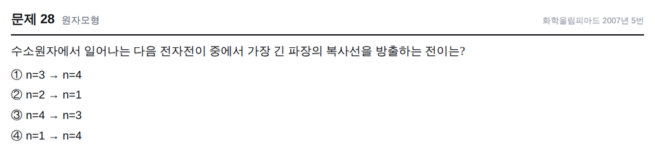
원문 이미지를 불러오지 못했습니다. 시험지 28번을 확인해 주세요.
정답 ③
글로 옮긴 것 보기 (원문이 아닙니다)
아래는 HWP·PDF 에서 글자만 뽑은 것이라 그림·표·수식이 빠져 있을 수 있습니다. 문제는 위 원문을 보세요.
수소원자에서 일어나는 다음 전자전이 중에서 가장 긴 파장의 복사선을 방출하는 전이는?
①n=3 → n=4
②n=2 → n=1
③n=4 → n=3정답
④n=1 → n=4
풀이 해설 보기
이다. 수소원자에서 에너지준위는 이다. 가장 긴 파장의 복사선을 방출하는 전자전이는 가장 에너지가 작은 빛을 방출하는 전자전이이다. 1312kJ/mol을 k로 두면 다음과 같다.
① n=3 → n=4
⇒ E₃=-(1/9)k, E₄=-(1/16)k, E=(7/144)k 흡수
② n=2 → n=1
⇒ E₂=-(1/4)k, E₁=-k, E=(3/4)k 방출
③ n=4 → n=3
⇒ E₃=-(1/9)k, E₄=-(1/16)k, E=(7/144)k 방출
④ n=1 → n=4
⇒ E₁=-k, E₄=-(1/16)k, E=(15/16)k 흡수
보기별 오개념(성적표용)
에너지차 작을수록 긴 파장 — 인접 준위 전이가 장파장
29원자모형수소원자스펙트럼정답률 46%
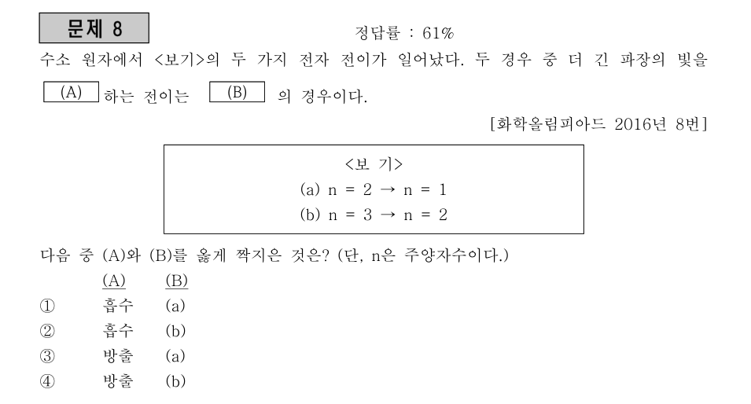
원문 이미지를 불러오지 못했습니다. 시험지 29번을 확인해 주세요.
정답 ④
글로 옮긴 것 보기 (원문이 아닙니다)
아래는 HWP·PDF 에서 글자만 뽑은 것이라 그림·표·수식이 빠져 있을 수 있습니다. 문제는 위 원문을 보세요.
수소 원자에서 의 두 가지 전자 전이가 일어났다. 두 경우 중 더 긴 파장의 빛을 하는 전이는 의 경우이다. 다음 중 (A)와 (B)를 옳게 짝지은 것은? (단, n은 주양자수이다.) (A) (B)
①흡수 (a)
②흡수 (b)
③방출 (a)
④방출 (b)정답
풀이 해설 보기
높은 에너지준위에서 낮은 에너지준위로 전자전이가 일어날 경우 빛을 방출한다. 반대로 낮은 에너지준위에서 높은 에너지준위로 전자전이가 일어나기위해서는 빛을 흡수해야 한다.
이므로 에너지는 진동수(υ)에 비례하고, 파장(λ)에는 반비례한다. 두 경우 중 더 긴 파장의 빛(적은 에너지의 빛)은 (b) n = 3 → n = 2 이고, 방출하는 빛이다.
보기별 오개념(성적표용)
ΔE 작은 전이가 더 긴 파장 — n 큰 준위 간 전이가 ΔE 작음
30원자모형전자스핀정답률 57%
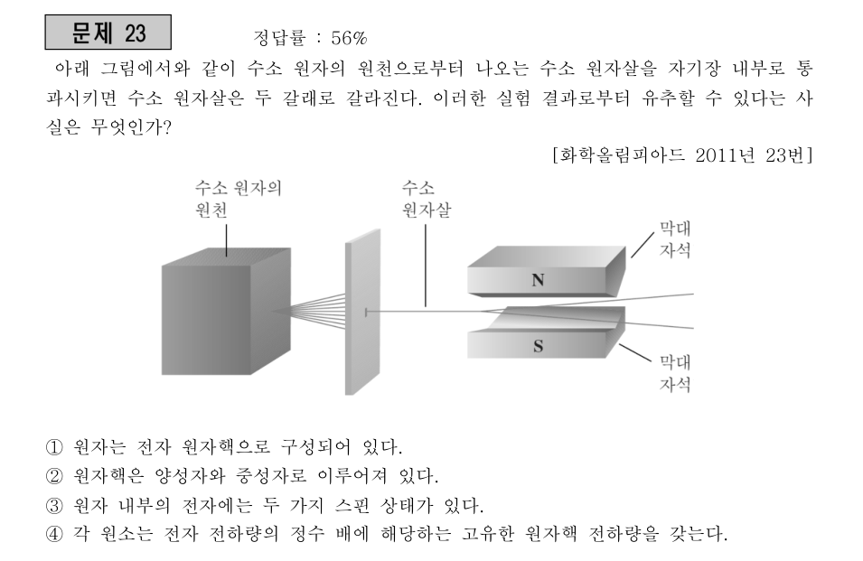
원문 이미지를 불러오지 못했습니다. 시험지 30번을 확인해 주세요.
정답 ③
글로 옮긴 것 보기 (원문이 아닙니다)
아래는 HWP·PDF 에서 글자만 뽑은 것이라 그림·표·수식이 빠져 있을 수 있습니다. 문제는 위 원문을 보세요.
아래 그림에서와 같이 수소 원자의 원천으로부터 나오는 수소 원자살을 자기장 내부로 통과시키면 수소 원자살은 두 갈래로 갈라진다. 이러한 실험 결과로부터 유추할 수 있다는 사실은 무엇인가?
①원자는 전자 원자핵으로 구성되어 있다.
②원자핵은 양성자와 중성자로 이루어져 있다.
③원자 내부의 전자에는 두 가지 스핀 상태가 있다.정답
④각 원소는 전자 전하량의 정수 배에 해당하는 고유한 원자핵 전하량을 갖는다.
풀이 해설 보기
전자의 스핀양자수는 이다. 홀전자는 2가지 스핀에 따라 자기장의 방향이 다르고 자석으로 작용하기 때문에 두 방향으로 나누어진다.
보기별 오개념(성적표용)
전자 스핀(±1/2)으로 원자살이 두 갈래 — 스핀 양자수 도입 근거
31원자모형양자수정답률 61%
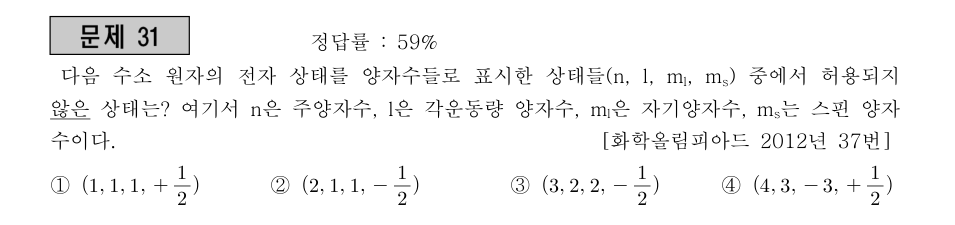
원문 이미지를 불러오지 못했습니다. 시험지 31번을 확인해 주세요.
정답 ①
글로 옮긴 것 보기 (원문이 아닙니다)
아래는 HWP·PDF 에서 글자만 뽑은 것이라 그림·표·수식이 빠져 있을 수 있습니다. 문제는 위 원문을 보세요.
오비탈과 양자수는 다음과 같다.
1) 주양자수 : 껍질수 (n=1, 2, 3, 4, …)
2) 부양자수 : 오비탈의 종류 (l=0, 1, 2, 3, …)
3) 자기양자수 : 오비탈()
4) 스핀양자수 : 전자의 스핀을 나타내는 양자수
주양자수 n에 가능한 부양자수는 l=n-1이고, , 이다.
따라서 ① 에서 주양자수가 1이면 부양자수는 0만 가능하다.
보기별 오개념(성적표용)
주(n)·부(l)·자기(mₗ)·스핀(mₛ) 양자수 규칙 — 오비탈 개수/종류 혼동 주의
32전자배치전자배치정답률 67%
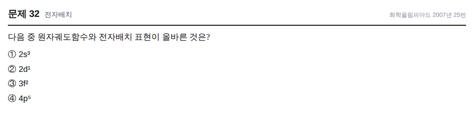
원문 이미지를 불러오지 못했습니다. 시험지 32번을 확인해 주세요.
정답 ④
글로 옮긴 것 보기 (원문이 아닙니다)
아래는 HWP·PDF 에서 글자만 뽑은 것이라 그림·표·수식이 빠져 있을 수 있습니다. 문제는 위 원문을 보세요.
다음 중 원자궤도함수와 전자배치 표현이 올바른 것은?
①2s³
②2d¹
③3f²
④4p⁵정답
풀이 해설 보기
① 2s³
⇒ 한 오비탈에 들어갈 수 있는 전자의 수는 최대 2개이다.
② 2d¹
⇒ d 오비탈은 3번째 껍질부터 가능하다.
③ 3f²
⇒ f 오비탈은 4번째 껍질부터 가능하다.
④ 4p⁵
⇒ 4p에 최대로 들어갈 수 있는 전자는 최대 6개이다. 5개의 전자가 들어있으므로 가능한 전자배치이다.
보기별 오개념(성적표용)
쌓음·파울리·훈트 규칙에 맞는 표현 — 오비탈 채움 순서/방향 주의
33전자배치전자배치정답률 38%
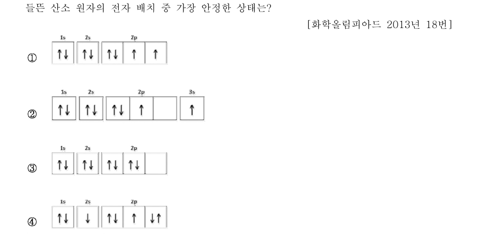
원문 이미지를 불러오지 못했습니다. 시험지 33번을 확인해 주세요.
정답 ③
글로 옮긴 것 보기 (원문이 아닙니다)
아래는 HWP·PDF 에서 글자만 뽑은 것이라 그림·표·수식이 빠져 있을 수 있습니다. 문제는 위 원문을 보세요.
들뜬 산소 원자의 전자 배치 중 가장 안정한 상태는?
③(선지는 그림·표 자료, 원본 PDF 참조)정답
풀이 해설 보기
들뜬 상태 중 가장 안정한 전자배치는 이다.
보기별 오개념(성적표용)
바닥상태=최저에너지 배치(쌓음·훈트) — 들뜬상태와 안정성 비교
34전자배치전자배치정답률 62%
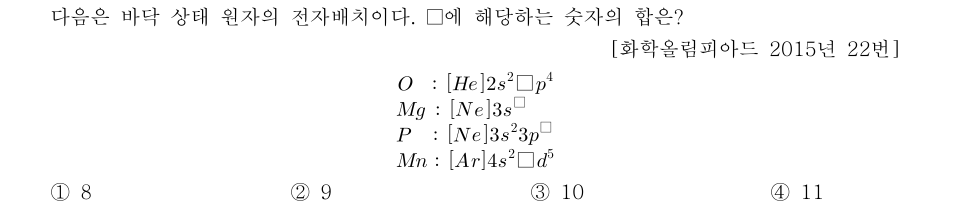
원문 이미지를 불러오지 못했습니다. 시험지 34번을 확인해 주세요.
정답 ③
글로 옮긴 것 보기 (원문이 아닙니다)
아래는 HWP·PDF 에서 글자만 뽑은 것이라 그림·표·수식이 빠져 있을 수 있습니다. 문제는 위 원문을 보세요.
다음은 바닥 상태 원자의 전자배치이다. □에 해당하는 숫자의 합은?
①8
②9
③10정답
④11
보기별 오개념(성적표용)
주어진 배치의 전자수 합 — 오비탈별 최대 전자수(s2,p6,d10) 주의
35전자배치전자배치정답률 52%
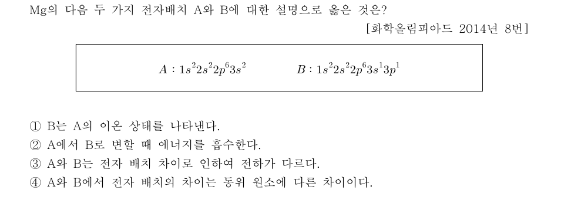
원문 이미지를 불러오지 못했습니다. 시험지 35번을 확인해 주세요.
정답 ②
글로 옮긴 것 보기 (원문이 아닙니다)
아래는 HWP·PDF 에서 글자만 뽑은 것이라 그림·표·수식이 빠져 있을 수 있습니다. 문제는 위 원문을 보세요.
Mg의 다음 두 가지 전자배치 A와 B에 대한 설명으로 옳은 것은?
①B는 A의 이온 상태를 나타낸다.
②A에서 B로 변할 때 에너지를 흡수한다.정답
③A와 B는 전자 배치 차이로 인하여 전하가 다르다.
④A와 B에서 전자 배치의 차이는 동위 원소에 다른 차이이다.
풀이 해설 보기
는 Mg의 바닥상태의 전자배치이다.
는 Mg의 들뜬상태의 전자배치이다.
① B는 A의 이온 상태를 나타낸다.
⇒ 틀린 설명, B는 A의 들뜬 상태를 나타내는 것이다. 이온이 아니다.
② A에서 B로 변할 때 에너지를 흡수한다.
⇒ 옳은 설명, 바닥 상태에서 들뜬 상태로 전자전이할 때 전자는 낮은 에너지준위에서 높은 에너지준위로 올라가는 것이기 때문에 에너지를 흡수한다.
③ A와 B는 전자 배치 차이로 인하여 전하가 다르다.
⇒ 틀린 설명, 전자 배치가 차이가 있지만 전하는 동일하게 중성이다.
④ A와 B에서 전자 배치의 차이는 동위 원소에 따른 차이이다.
⇒ 틀린 설명, 전자 배치의 차이는 동위 원소에 따른 차이가 아니라 전자가 존재하는 오비탈에 따른 차이이다.
보기별 오개념(성적표용)
바닥/들뜬, 파울리 위배 여부로 배치 타당성 판단
36주기율원자반지름정답률 60%
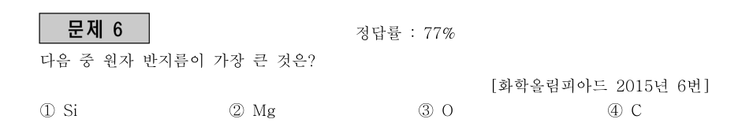
원문 이미지를 불러오지 못했습니다. 시험지 36번을 확인해 주세요.
정답 ②
글로 옮긴 것 보기 (원문이 아닙니다)
아래는 HWP·PDF 에서 글자만 뽑은 것이라 그림·표·수식이 빠져 있을 수 있습니다. 문제는 위 원문을 보세요.
다음 중 원자 반지름이 가장 큰 것은?
①Si
②Mg정답
③O
④C
풀이 해설 보기
원자반지름은 주기율표 왼쪽, 아래로 갈수록 크다.
① Si ② Mg ③ O ④ C 중 가장 왼쪽, 아래에 있는 원소는 Mg이다.
보기별 오개념(성적표용)
같은 주기 오른쪽으로 감소, 같은 족 아래로 증가 — 유효핵전하/껍질 수 고려
37주기율이온반지름정답률 50%
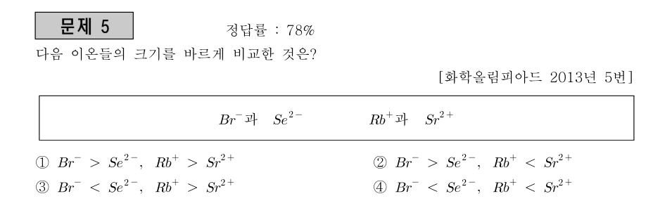
원문 이미지를 불러오지 못했습니다. 시험지 37번을 확인해 주세요.
정답 ③
글로 옮긴 것 보기 (원문이 아닙니다)
아래는 HWP·PDF 에서 글자만 뽑은 것이라 그림·표·수식이 빠져 있을 수 있습니다. 문제는 위 원문을 보세요.
다음 이온들의 크기를 바르게 비교한 것은?
③(선지는 그림·표 자료, 원본 PDF 참조)정답
풀이 해설 보기
Br⁻와 Se²⁻는 모두 Kr의 전자배치와 같다. Rb⁺와 Sr²⁺도 모두 Kr의 전자배치와 같다.
등전자이온인 경우에는 핵의 전하량이 클수록 반지름이 작아진다.
따라서 Br⁻ Sr²⁺이다.
보기별 오개념(성적표용)
등전자이온은 핵전하 클수록 작아짐 — 음이온>양이온 경향 주의
38주기율등전자이온정답률 84%
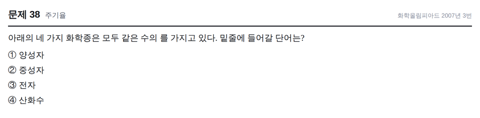
원문 이미지를 불러오지 못했습니다. 시험지 38번을 확인해 주세요.
정답 ③
글로 옮긴 것 보기 (원문이 아닙니다)
아래는 HWP·PDF 에서 글자만 뽑은 것이라 그림·표·수식이 빠져 있을 수 있습니다. 문제는 위 원문을 보세요.
아래의 네 가지 화학종은 모두 같은 수의 를 가지고 있다. 밑줄에 들어갈 단어는?
①양성자
②중성자
③전자정답
④산화수
풀이 해설 보기
F⁻, Ne, Na⁺, Mg²⁺는 동일한 전자배치를 가진다. 따라서 네 가지 화학종은 모두 같은 수의 전자를 가지고 있다. 양성자 수는 각각 9,10,11,12이고 중성자수는 동위원소의 종류에 따라 달라질 수 있다. 전자 수는 모두 10개로 동일하고 산화수는 각각 –1,0,+1,+2이다.
보기별 오개념(성적표용)
전자수 같은(등전자) 종 — 양성자수 차이로 크기 결정
39주기율이온화에너지정답률 41%
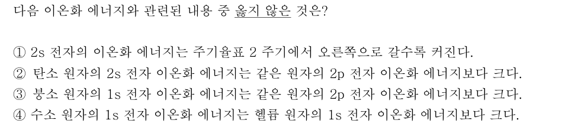
원문 이미지를 불러오지 못했습니다. 시험지 39번을 확인해 주세요.
정답 ④
글로 옮긴 것 보기 (원문이 아닙니다)
아래는 HWP·PDF 에서 글자만 뽑은 것이라 그림·표·수식이 빠져 있을 수 있습니다. 문제는 위 원문을 보세요.
다음 이온화 에너지와 관련된 내용 중 옳지 않은 것은?
①2s 전자의 이온화 에너지는 주기율표 2 주기에서 오른쪽으로 갈수록 커진다.
②탄소 원자의 2s 전자 이온화 에너지는 같은 원자의 2p 전자 이온화 에너지보다 크다.
③붕소 원자의 1s 전자 이온화 에너지는 같은 원자의 2p 전자 이온화 에너지보다 크다.
④수소 원자의 1s 전자 이온화 에너지는 헬륨 원자의 1s 전자 이온화 에너지보다 크다.정답
풀이 해설 보기
① 2s 전자의 이온화 에너지는 주기율표 2 주기에서 오른쪽으로 갈수록 커진다.
⇒ 옳은 설명, 핵전하량이 클수록 이온화에너지가 커진다.
② 탄소 원자의 2s 전자 이온화 에너지는 같은 원자의 2p 전자 이온화 에너지보다 크다.
⇒ 옳은 설명, 2s의 에너지준위가 2p의 에너지준위보다 낮기 때문에 이온화에너지는 2s 전자가 2p 전자보다 크다.
③ 붕소 원자의 1s 전자 이온화 에너지는 같은 원자의 2p 전자 이온화 에너지보다 크다.
⇒ 옳은 설명, 1s의 에너지준위가 2p의 에너지준위보다 낮기 때문에 이온화에너지는 1s 전자가 2p 전자보다 크다.
④ 수소 원자의 1s 전자 이온화 에너지는 헬륨 원자의 1s 전자 이온화 에너지보다 크다.
⇒ 틀린 설명, 같은 1s 전자라도 핵전하가 크면 에너지준위가 낮고 이온화 에너지가 크다.
보기별 오개념(성적표용)
주기성·예외(2족>13족, 15족>16족) — 순차 이온화 급증 지점 주의
40주기율순차적이온화에너지정답률 45%
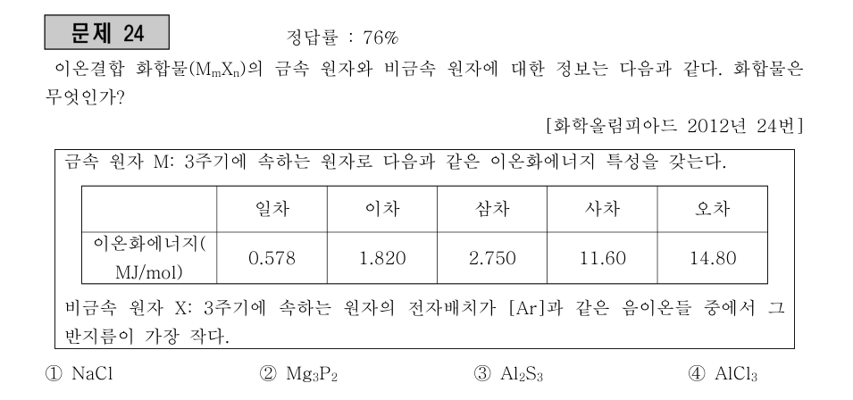
원문 이미지를 불러오지 못했습니다. 시험지 40번을 확인해 주세요.
정답 ④
글로 옮긴 것 보기 (원문이 아닙니다)
아래는 HWP·PDF 에서 글자만 뽑은 것이라 그림·표·수식이 빠져 있을 수 있습니다. 문제는 위 원문을 보세요.
이온결합 화합물(MmXn)의 금속 원자와 비금속 원자에 대한 정보는 다음과 같다. 화합물은 무엇인가?
①NaCl
②Mg₃P₂
③Al₂S₃
④AlCl₃정답
풀이 해설 보기
금속원자 M은 일차이온화에너지가 578kJ/mol이다. IE₃<<IE₄이므로 13족이다. 금속원자 M=Al이다.
3주기에 속하는 원자의 전자배치가 [Ar]과 같은 음이온들 P³⁻, S²⁻, Cl⁻ 중 반지름이 가장 작은 것은 핵전하량이 큰 Cl이다. M과 X의 화합물은 AlCl₃이다.
보기별 오개념(성적표용)
금속 양이온/비금속 음이온 전하 균형으로 MₘXₙ 결정 — 전하 교차 주의
41주기율전자배치정답률 57%
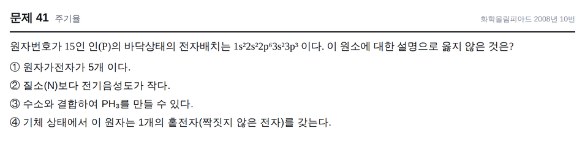
원문 이미지를 불러오지 못했습니다. 시험지 41번을 확인해 주세요.
정답 ④
글로 옮긴 것 보기 (원문이 아닙니다)
아래는 HWP·PDF 에서 글자만 뽑은 것이라 그림·표·수식이 빠져 있을 수 있습니다. 문제는 위 원문을 보세요.
원자번호가 15인 인(P)의 바닥상태의 전자배치는 1s²2s²2p⁶3s²3p³ 이다. 이 원소에 대한 설명으로 옳지 않은 것은?
①원자가전자가 5개 이다.
②질소(N)보다 전기음성도가 작다.
③수소와 결합하여 PH₃를 만들 수 있다.
④기체 상태에서 이 원자는 1개의 홑전자(짝짓지 않은 전자)를 갖는다.정답
풀이 해설 보기
① 원자가전자가 5개 이다.
⇒ 옳은 설명, 인은 15족으로 원자가전자가 5개이다.
② 질소(N)보다 전기음성도가 작다.
⇒ 옳은 설명, N의 전기음성도는 3.0이고 P의 전기음성도는 2.1이다.
③ 수소와 결합하여 PH₃를 만들 수 있다.
⇒ 옳은 설명, 15족이므로 PH₃를 만들 수 있다.
④ 기체 상태에서 이 원자는 1개의 홑전자(짝짓지 않은 전자)를 갖는다.
⇒ 틀린 설명, 주족에서는 족에 따라 10123210이다. 15족은 3개의 홀전자를 가진다.
보기별 오개념(성적표용)
3p³ 등 배치로 홀전자수·원자가 판단 — 배치-성질 연결 주의
42주기율주기적성질정답률 47%
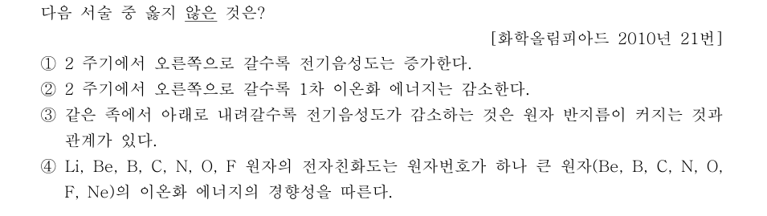
원문 이미지를 불러오지 못했습니다. 시험지 42번을 확인해 주세요.
정답 ②
글로 옮긴 것 보기 (원문이 아닙니다)
아래는 HWP·PDF 에서 글자만 뽑은 것이라 그림·표·수식이 빠져 있을 수 있습니다. 문제는 위 원문을 보세요.
다음 서술 중 옳지 않은 것은?
①2 주기에서 오른쪽으로 갈수록 전기음성도는 증가한다.
②2 주기에서 오른쪽으로 갈수록 1차 이온화 에너지는 감소한다.정답
③같은 족에서 아래로 내려갈수록 전기음성도가 감소하는 것은 원자 반지름이 커지는 것과 관계가 있다.
④Li, Be, B, C, N, O, F 원자의 전자친화도는 원자번호가 하나 큰 원자(Be, B, C, N, O, F, Ne)의 이온화 에너지의 경향성을 따른다.
풀이 해설 보기
① 2 주기에서 오른쪽으로 갈수록 전기음성도는 증가한다.
⇒ 옳은 설명, 전기음성도는 2주기에서 오른쪽으로 갈수록 약 0.5씩 커진다.
② 2 주기에서 오른쪽으로 갈수록 1차 이온화 에너지는 감소한다.
⇒ 틀린 설명, 2주기에서 1차 이온화 에너지는 Li<B<Be<C<O<N<F<Ne 순이다. 13족과 16족은 예외이다.
③ 같은 족에서 아래로 내려갈수록 전기음성도가 감소하는 것은 원자 반지름이 커지는 것과 관계가 있다.
⇒ 옳은 설명, 원자 반지름이 커지면 잡아당기는 힘이 감소한다.
④ Li, Be, B, C, N, O, F 원자의 전자친화도는 원자번호가 하나 큰 원자(Be, B, C, N, O, F, Ne)의 이온화 에너지의 경향성을 따른다.
⇒ 옳은 설명, 전자친화도는 이므로 역반응의 반응식을 살펴보면 다음과 같다. 따라서 원자번호 1 큰 원소의 이온화에너지 경향과 비슷하다.
보기별 오개념(성적표용)
주기/족 경향(반지름·IE·전기음성도)의 방향 혼동 주의
43주기율주기적성질정답률 54%
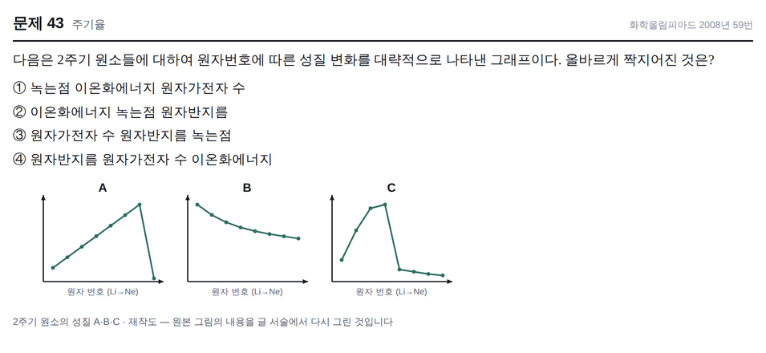
원문 이미지를 불러오지 못했습니다. 시험지 43번을 확인해 주세요.
정답 ③
글로 옮긴 것 보기 (원문이 아닙니다)
아래는 HWP·PDF 에서 글자만 뽑은 것이라 그림·표·수식이 빠져 있을 수 있습니다. 문제는 위 원문을 보세요.
다음은 2주기 원소들에 대하여 원자번호에 따른 성질 변화를 대략적으로 나타낸 그래프이다. 올바르게 짝지어진 것은? A B C
①녹는점 이온화에너지 원자가전자 수
②이온화에너지 녹는점 원자반지름
③원자가전자 수 원자반지름 녹는점정답
④원자반지름 원자가전자 수 이온화에너지
풀이 해설 보기
금속과 원자결정은 녹는점이 높고 비금속 분자결정은 녹는점이 낮다.
같은 주기에서 오른쪽으로 갈수록 이온화 에너지는 대체적으로 커진다.
2주기 원소에서 이온화 에너지는 Li<B<Be<C<O<N<F<Ne 이다.
2주기에서 원자반지름은 원자번호가 커짐에 따라 핵 전하량이 커지기 때문에 감소한다.
원자가전자수는 1,2,13,14,15,16,17,18족이 각 1,2,3,4,5,6,7,0이다.
보기별 오개념(성적표용)
원자번호 따른 반지름·IE 변화 그래프 해석 — 경향과 예외 구분
44주기율본하버순환정답률 73%
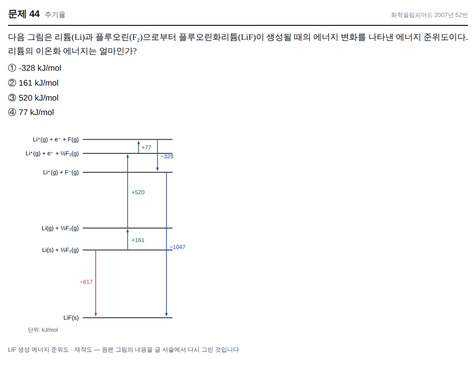
원문 이미지를 불러오지 못했습니다. 시험지 44번을 확인해 주세요.
정답 ③
글로 옮긴 것 보기 (원문이 아닙니다)
아래는 HWP·PDF 에서 글자만 뽑은 것이라 그림·표·수식이 빠져 있을 수 있습니다. 문제는 위 원문을 보세요.
다음 그림은 리튬(Li)과 플루오린(F₂)으로부터 플루오린화리튬(LiF)이 생성될 때의 에너지 변화를 나타낸 에너지 준위도이다. 리튬의 이온화 에너지는 얼마인가?
①-328 kJ/mol
②161 kJ/mol
③520 kJ/mol정답
④77 kJ/mol
풀이 해설 보기
Li의 IE는 520kJ/mol이다. 이온화에너지의 정의는 기체 상태의 중성원자 1개에서 전자 1개 떼어낼 때 흡수하는 에너지이다. Li(g)+IE→Li⁺(g)+e⁻ 이다. 에너지준위도에서 위의 식을 찾아보면 520kJ/mol이다. -617kJ/mol은 반응엔탈피, 161kJ/mol은 Li의 승화에너지이고, 77kJ/mol은 F₂의 결합에너지의 절반이다. -328kJ/mol은 F의 전자친화도, -1047kJ/mol은 LiF의 결정격자에너지이다.
보기별 오개념(성적표용)
이온결합 생성 에너지 단계(승화·이온화·전자친화·격자E) 부호 주의
45주기율본하버순환정답률 64%
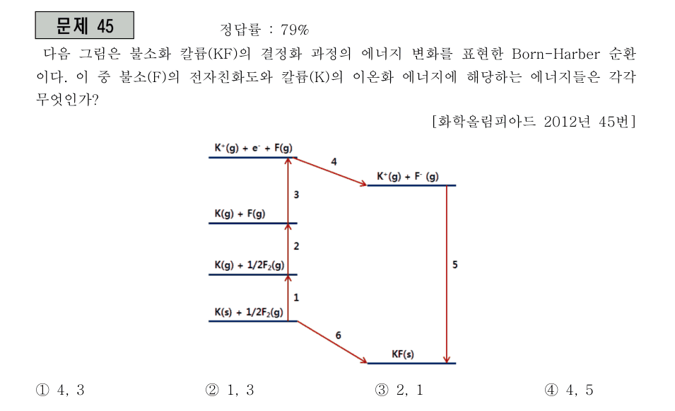
원문 이미지를 불러오지 못했습니다. 시험지 45번을 확인해 주세요.
정답 ①
글로 옮긴 것 보기 (원문이 아닙니다)
아래는 HWP·PDF 에서 글자만 뽑은 것이라 그림·표·수식이 빠져 있을 수 있습니다. 문제는 위 원문을 보세요.
다음 그림은 불소화 칼륨(KF)의 결정화 과정의 에너지 변화를 표현한 Born-Harber 순환이다. 이 중 불소(F)의 전자친화도와 칼륨(K)의 이온화 에너지에 해당하는 에너지들은 각각 무엇인가?
①4, 3정답
②1, 3
③2, 1
④4, 5
풀이 해설 보기
F의 전자친화도:
K의 이온화에너지:
이에 대한 화학식은 각각 4, 3이다.
보기별 오개념(성적표용)
해리/승화/이온화/전자친화/격자에너지 단계의 부호·방향 구분
46분자의 구조옥텟규칙정답률 58%
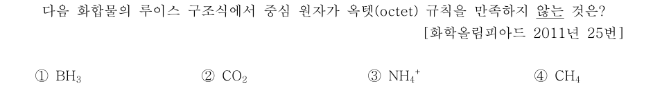
원문 이미지를 불러오지 못했습니다. 시험지 46번을 확인해 주세요.
정답 ①
글로 옮긴 것 보기 (원문이 아닙니다)
아래는 HWP·PDF 에서 글자만 뽑은 것이라 그림·표·수식이 빠져 있을 수 있습니다. 문제는 위 원문을 보세요.
다음 화합물의 루이스 구조식에서 중심 원자가 옥테트(octet) 규칙을 만족하지 않는 것은?
①BH₃정답
②CO₂
③NH₄⁺
④CH₄
풀이 해설 보기
① BH₃의 B는 중심원소에 3개의 전자를 가지고 결합에 참여한다. 따라서 최외각전자의 수는 6개이므로 옥텟규칙을 만족하지 않는다.
보기별 오개념(성적표용)
중심원자 옥텟 미충족(BF₃, 확장 옥텟 등) 식별 — 모든 원자 옥텟 가정 오류
47분자의 모양분자의모양정답률 47%
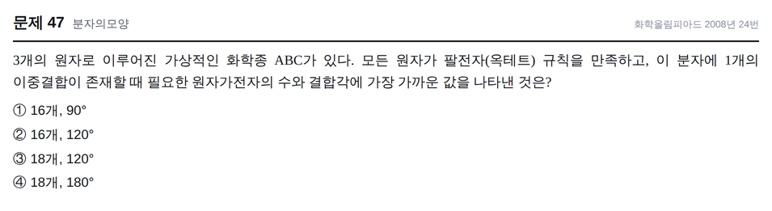
원문 이미지를 불러오지 못했습니다. 시험지 47번을 확인해 주세요.
정답 ③
글로 옮긴 것 보기 (원문이 아닙니다)
아래는 HWP·PDF 에서 글자만 뽑은 것이라 그림·표·수식이 빠져 있을 수 있습니다. 문제는 위 원문을 보세요.
3개의 원자로 이루어진 가상적인 화학종 ABC가 있다. 모든 원자가 팔전자(옥테트) 규칙을 만족하고, 이 분자에 1개의 이중결합이 존재할 때 필요한 원자가전자의 수와 결합각에 가장 가까운 값을 나타낸 것은?
①16개, 90°
②16개, 120°
③18개, 120°정답
④18개, 180°
풀이 해설 보기
ABC가 모두 옥텟규칙을 만족하고 이중결합이 하나 존재한다면, A=B-C라고 볼 수 있다. A에 비공유전자쌍 2개, B에 비공유전자쌍 1개, C에 비공유전자쌍 3개이다. 중심원소는 SN3이고 sp²혼성오비탈이다. 따라서 모양은 굽은형이고 결합각은 120도이다. 총 원자가전자의 수는 A가 6개, B가 5개, C가 7개이다. 따라서 총 원자가전자수는 18개이다.
보기별 오개념(성적표용)
옥텟 만족+형식전하 최소 구조 — 전자수 배분 주의
48분자의 모양분자의모양정답률 48%
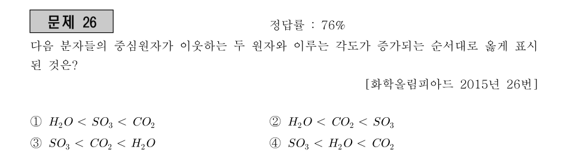
원문 이미지를 불러오지 못했습니다. 시험지 48번을 확인해 주세요.
정답 ①
글로 옮긴 것 보기 (원문이 아닙니다)
아래는 HWP·PDF 에서 글자만 뽑은 것이라 그림·표·수식이 빠져 있을 수 있습니다. 문제는 위 원문을 보세요.
다음 분자들의 중심원자가 이웃하는 두 원자와 이루는 각도가 증가되는 순서대로 옳게 표시된 것은?
①(선지는 그림·표 자료, 원본 PDF 참조)정답
풀이 해설 보기
H₂O: 104.5°, SO₃: 120°, CO₂: 180°
보기별 오개념(성적표용)
고립쌍 반발로 결합각 변화(CH₄>NH₃>H₂O) — VSEPR 적용 주의
49분자의 구조분자의모양정답률 66%
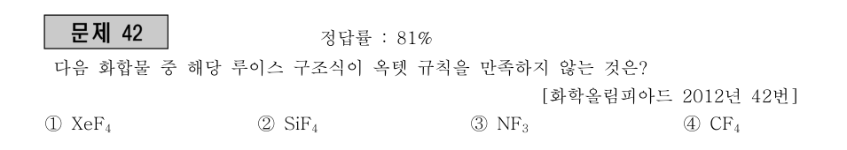
원문 이미지를 불러오지 못했습니다. 시험지 49번을 확인해 주세요.
정답 ①
글로 옮긴 것 보기 (원문이 아닙니다)
아래는 HWP·PDF 에서 글자만 뽑은 것이라 그림·표·수식이 빠져 있을 수 있습니다. 문제는 위 원문을 보세요.
다음 화합물 중 해당 루이스 구조식이 옥텟 규칙을 만족하지 않는 것은?
①XeF₄정답
②SiF₄
③NF₃
④CF₄
풀이 해설 보기
① XeF₄: Xe는 비활성기체이므로 8개의 전자를 가진다. 4개의 F과 결합하면, 12개의 전자를 가지게 되어 옥텟규칙을 만족하지 않는다.
② SiF₄: Si는 14족이므로 4개의 최외각전자를 가진다. 4개의 F과 결합하면 최외각전자가 8개이므로 옥텟규칙을 만족한다.
③ NF₃: N은 15족이므로 5개의 최외각전자를 가진다. 3개의 F와 결합하면 최외각전자가 8개이므로 옥옥텟규칙을 만족한다.
④ CF₄: C는 14족이므로 4개의 최외각전자를 가진다. 4개의 F과 결합하면 최외각전자가 8개이므로 옥텟규칙을 만족한다.
보기별 오개념(성적표용)
확장/부족 옥텟 분자 식별 — 3주기 이상 중심원자 확장 옥텟
50분자의 모양분자의모양정답률 40%
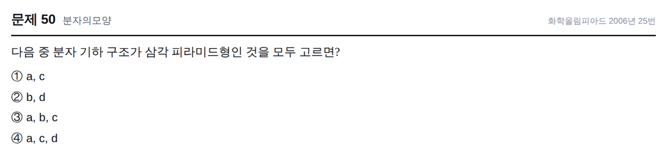
원문 이미지를 불러오지 못했습니다. 시험지 50번을 확인해 주세요.
정답 ①
글로 옮긴 것 보기 (원문이 아닙니다)
아래는 HWP·PDF 에서 글자만 뽑은 것이라 그림·표·수식이 빠져 있을 수 있습니다. 문제는 위 원문을 보세요.
다음 중 분자 기하 구조가 삼각 피라미드형인 것을 모두 고르면?
①a, c정답
②b, d
③a, b, c
④a, c, d
보기별 오개념(성적표용)
중심원자 고립쌍 1개+결합쌍 3개(AX₃E)=삼각피라미드 — 평면삼각형과 혼동 주의
51분자의 모양분자의모양정답률 34%
원문 이미지를 불러오지 못했습니다. 시험지 51번을 확인해 주세요.
정답 ①
글로 옮긴 것 보기 (원문이 아닙니다)
아래는 HWP·PDF 에서 글자만 뽑은 것이라 그림·표·수식이 빠져 있을 수 있습니다. 문제는 위 원문을 보세요.
다음 화학종들의 구조 중에서 가장 많은 것은?
①시소형정답
②평면사각형
③삼각뿔형
④구부러진 T형
보기별 오개념(성적표용)
VSEPR로 전자쌍 배열 판단 — 입체수(SN) 계산 주의
52분자의 극성혼성오비탈정답률 48%
원문 이미지를 불러오지 못했습니다. 시험지 52번을 확인해 주세요.
정답 ④
글로 옮긴 것 보기 (원문이 아닙니다)
아래는 HWP·PDF 에서 글자만 뽑은 것이라 그림·표·수식이 빠져 있을 수 있습니다. 문제는 위 원문을 보세요.
다음 중 중심원자의 혼성궤도함수가 다른 것은?
①NH₃
②H₃O⁺
③CH₄
④SO₂정답
풀이 해설 보기
① NH₃: sp³ ② H₃O⁺: sp³ ③ CH₄: sp³ ④ SO₂: sp²
보기별 오개념(성적표용)
입체수에 따른 sp/sp²/sp³ 혼성 — 고립쌍 포함 여부 주의
53분자의 극성쌍극자모멘트정답률 42%
원문 이미지를 불러오지 못했습니다. 시험지 53번을 확인해 주세요.
정답 ④
글로 옮긴 것 보기 (원문이 아닙니다)
아래는 HWP·PDF 에서 글자만 뽑은 것이라 그림·표·수식이 빠져 있을 수 있습니다. 문제는 위 원문을 보세요.
다음 화합물 중 쌍극자 모멘트가 없는 것은?
①CHCl₃
②NCl₃
③H₂S
④BF₃정답
보기별 오개념(성적표용)
대칭 구조면 결합 쌍극자 상쇄(CO₂, CCl₄) — 극성결합≠극성분자
54분자의 극성분자의극성정답률 58%
원문 이미지를 불러오지 못했습니다. 시험지 54번을 확인해 주세요.
정답 ②
글로 옮긴 것 보기 (원문이 아닙니다)
아래는 HWP·PDF 에서 글자만 뽑은 것이라 그림·표·수식이 빠져 있을 수 있습니다. 문제는 위 원문을 보세요.
다음 물질들 중 극성 물질은 모두 몇 개인가?
①1
②2정답
③3
④4
보기별 오개념(성적표용)
결합 극성+기하 비대칭이라야 분자 극성 — 대칭 분자 무극성
55분자의 극성결합의극성정답률 44%
원문 이미지를 불러오지 못했습니다. 시험지 55번을 확인해 주세요.
정답 ④
글로 옮긴 것 보기 (원문이 아닙니다)
아래는 HWP·PDF 에서 글자만 뽑은 것이라 그림·표·수식이 빠져 있을 수 있습니다. 문제는 위 원문을 보세요.
다음 분자들 중에서 극성공유결합이 있지만 분자 자체는 비극성인 것은?
①물
②암모니아
③오존
④이산화탄소정답
풀이 해설 보기
두 원자 사이의 결합에서 같은 원소 사이의 공유결합을 무극성공유결합, 다른 원소사이의 공유결합을 극성공유결합이라고 한다.
①물은 H₂O로 극성공유결합이면서, 분자의 모양은 굽은형이다. 쌍극자모멘트 합이 0이 아니므로 극성분자이다.
②암모니아는 NH₃이고 극성공유결합이면서 분자의 모양은 삼각뿔형이다. 쌍극자모멘트 합이 0이 아니므로 극성분자이다.
③오존은 O₃이고 무극성공유결합이지만 분자의 모양은 굽은형이다. 에서 중심산소의 형식전하는 +1이고 양쪽의 산소는 각각 이다. 따라서 극성 분자이다.
④이산화탄소는 CO₂이고 극성공유결합이면서 분자의 모양은 직선형이다. O=C=O 의 모양으로 쌍극자 모멘트의 합이 0이다. 따라서 무극성 분자이다.
보기별 오개념(성적표용)
극성결합이 대칭 배열로 상쇄되면 분자는 무극성(CO₂, BF₃)
56분자의 극성분자의 극성정답률 34%
원문 이미지를 불러오지 못했습니다. 시험지 56번을 확인해 주세요.
정답 ②
글로 옮긴 것 보기 (원문이 아닙니다)
아래는 HWP·PDF 에서 글자만 뽑은 것이라 그림·표·수식이 빠져 있을 수 있습니다. 문제는 위 원문을 보세요.
다음 중 분자간 쌍극자-쌍극자 인력을 가지는 것은?
①XeF₄
②AsH₃정답
③BCl₃
④CO₂
풀이 해설 보기
삼각뿔모양인 AsH₃는 극성이다.
보기별 오개념(성적표용)
극성 분자 사이에 작용 — 무극성/이온과 혼동 주의
57분자의 극성분자의 극성정답률 25%
원문 이미지를 불러오지 못했습니다. 시험지 57번을 확인해 주세요.
정답 ④
글로 옮긴 것 보기 (원문이 아닙니다)
아래는 HWP·PDF 에서 글자만 뽑은 것이라 그림·표·수식이 빠져 있을 수 있습니다. 문제는 위 원문을 보세요.
다음 화학종 중에서 극성을 띠는 화학종의 개수는?
①2
②3
③4
④5정답
보기별 오개념(성적표용)
기하 대칭성으로 극성 판별 — 결합 극성만 보는 오류
58분자의 극성분자의 극성정답률 56%
원문 이미지를 불러오지 못했습니다. 시험지 58번을 확인해 주세요.
정답 ③
글로 옮긴 것 보기 (원문이 아닙니다)
아래는 HWP·PDF 에서 글자만 뽑은 것이라 그림·표·수식이 빠져 있을 수 있습니다. 문제는 위 원문을 보세요.
아래는 HWP·PDF 에서 글자만 뽑은 것이라 그림·표·수식이 빠져 있을 수 있습니다. 문제는 위 원문을 보세요.
다음 분자들이 가지는 성질들이 증가되는 순서대로 옳게 표시된 것은?
①결합 해리 에너지: C=C < C≡O < C≡C
②극성: F–Cl < F–Br < F–H정답
③첫 번째 이온화 에너지: C < N < O
④크기: F < O²– < O
풀이 해설 보기
① 틀린 설명 (결합 해리 에너지: C=C < C≡O < C≡C)
⇒ 결합 해리 에너지: C=C < C≡C < C≡O
② 옳은 설명 (극성: F–Cl < F–Br < F–H)
③ 틀린 설명 (첫 번째 이온화 에너지: C < N < O)
⇒ 첫 번째 이온화 에너지: C < O < N
④ 틀린 설명 (크기: F < O²– < O)
⇒ 크기: F < O < O²–
보기별 오개념(성적표용)
분자량·극성에 따른 끓는점/용해도 등 성질 경향 비교
60기타수소결합정답률 42%
원문 이미지를 불러오지 못했습니다. 시험지 60번을 확인해 주세요.
정답 ③
글로 옮긴 것 보기 (원문이 아닙니다)
아래는 HWP·PDF 에서 글자만 뽑은 것이라 그림·표·수식이 빠져 있을 수 있습니다. 문제는 위 원문을 보세요.
다음 설명에 관한 내용으로 옳지 않은 것은?
①이 물질은 극성 용매로 작용한다.
②(가)의 분자간 결합에서 이 물질 한 분자는 최대 4개 결합을 할 수 있다.
③(나)에서 포집된 기체들의 부피비는 1 : 8이다.정답
④(다)에서 생성되는 나머지 주요 기체 생성물이 이 물질에 녹으면 산성을 띤다.
풀이 해설 보기
물에 대한 설명이다.
① 이 물질은 극성 용매로 작용한다.
⇒ 옳은 설명, 물은 극성용매이다.
② (가)의 분자간 결합에서 이 물질 한 분자는 최대 4개 결합을 할 수 있다.
⇒ 옳은 설명, 산소는 비공유전자쌍 2개, 수소 2개이므로 한 분자당 최대 4개의 수소결합을 할 수 있다.
③ (나)에서 포집된 기체들의 부피비는 1 : 8이다.
⇒ 틀린 설명, 포집된 기체들의 부피비는 1:2이고 질량비가 1:8이다.
④ (다)에서 생성되는 나머지 주요 기체 생성물이 이 물질에 녹으면 산성을 띤다.
⇒ 옳은 설명, 화석연료를 연소시키면 이산화탄소와 물이 만들어진다. 이산화탄소가 물에 녹으면 탄산으로 작용한다. 비금속산화물은 산으로 작용할 수 있다.